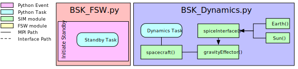

scenario_BasicOrbit¶
Overview¶
This script sets up a 3-DOF spacecraft which is orbiting the Earth. The goal of the scenario is to
highlight the structure of the BSK_Sim architecture,
demonstrate how to create a custom BSK_scenario, and
how to customize the
BSK_Dynamics.pyandBSK_FSW.pyfiles.
The script is found in the folder basilisk/examples/BskSim/scenarios and executed by using:
python3 scenario_BasicOrbit.py
The simulation mimics the basic simulation scenario in the earlier tutorial in scenarioBasicOrbit. But rather than explicitly defining all simulation properties within the python simulation file, the bskSim spacecraft simulation class is used to encapsulate a lot of the setup and configuring.
The simulation layout is shown in the following illustration.
Two simulation processes are created: one
which contains dynamics modules, and one that contains the Flight Software (FSW)
modules. The benefit of the new BSK_Sim architecture is how it allows the user to have a pre-written spacecraft
configurations and FSW modes neatly organized within three modular files: a BSK_scenario file, a FSW file, and
a Dynamics file.
More explicitly, the purpose of the scenario file (in this case scenario_BasicOrbit)
within the BSK_Simulation architecture is to provide the user a
simple, front-end interface to configure a scenario without having to individually initialize and integrate each
dynamics and FSW module into their simulation. Instead the Dynamics file
(for instance BSK_Dynamics or BSK_FormationDynamics)
has preconfigured many dynamics modules, attached them to the spacecraft,
and linked their messages to the appropriate FSW modules.
Similarly, the FSW file (in this case BSK_Fsw) creates preconfigured FSW modes such as hill pointing, sun safe
pointing, velocity pointing, and more. Each preconfigured mode triggers a specific event which enables various FSW tasks
like assigning enabling a specific pointing model or control loop. The proceeding sequence of tasks then initialize the
appropriate FSW modules, link their messages, and provide pre-written FSW functionality through a simple
modeRequest variable within the BSK_scenario file.
Configuring the scenario file¶
To write a custom scenario file, first create a class such as scenario_BasicOrbit that will
inherent from the masterSim class.
Following the inheritance, there are three functions within the scenario class that need to be defined by the user:
configure_initial_conditions(), log_outputs(), and pull_outputs().
Within configure_initial_conditions(), the user needs to define the spacecraft FSW
mode for the simulation through the modeRequest variable.
this is the parameter that triggers the aforementioned FSW event. Additional FSW modes (to be discussed in later
tutorials) include sunSafePoint, inertial3D, velocityPoint, hillPoint, and more.
Additionally, the user needs to supply initial conditions for the spacecraft and its orbit. The example script code uses the orbitalMotion module to construct the appropriate position and velocity vectors for a stable orbit, and then assigns them to the spacecraft.
The self.masterSim.get_DynModel() is referencing a list of available dynamic modules preconfigured in the Dynamics file.
Within log_outputs(), the user can supply a list of messages they are interested in logging. Position and velocity
from the navigation message are relevant to verify proper orbit functionality.
Finally within the pull_outputs(), the user can pull specific variables from the logged messages
and proceed to graph them using predefined plotting routines in BSK_Plotting.py
Custom Configurations Instructions¶
The benefit of the BSK_Simulation architecture is its user simplicity. Things like spacecraft hub configurations,
reaction wheel pyramids, and
coarse sun sensor constellations are all preconfigured; however, for users who would like to customize their own
dynamics modules and FSW modes, it is recommended to copy the two primary BSK_Sim files
(BSK_Dynamics.py and BSK_FSW.py) and modify them directly.
Instructions for configuring
user-customized Dynamics and FSW files are detailed below.
Custom Dynamics Configurations Instructions¶
In BSK_Dynamics, the script first generates a dynamics task onto which
future dynamics modules will be added.
Following the task generation, all desired dynamics module objects are generated:
These objects are then configured through InitAllDynObjects(SimBase) which iterates through a number of setter
functions that configure all of the dynamics objects properties and messages.
These setter functions are examples of how the BSK_Sim architecture has preconfigured
dynamics modules within the BSK_Dynamics.
Now, for every future scenario file, a spacecraft object, gravity effector, and simple
navigation sensor will be available for use.
Finally, all now-configured objects are attached to the DynamicsTask
The number at the end of AddModelToTask corresponds with the priority of the model.
The higher the number, the earlier the model gets evaluated during each time step.
Custom FSW Configurations Instructions¶
BSK_FSW.py’s __init__() procedure defines all
possible configuration messages to be used by future FSW algorithms.
Because this scenario is simulating a 3-DOF spacecraft, there are no FSW algorithms needed to control attitude.
As such, a initializeStandby event is created within BSK_Fsw to ensure all
FSW tasks are disabled. This event is
triggered by the modeRequest called in scenario_BasicOrbit and
executes the following code in BSK_Fsw.
Illustration of Simulation Results¶
showPlots = True
- scenario_BasicOrbit.run(showPlots)[source]¶
The scenarios can be run with the followings setups parameters:
- Parameters
showPlots (bool) – Determines if the script should display plots
- class scenario_BasicOrbit.scenario_BasicOrbit[source]¶
Bases:
BSK_masters.BSKSim,BSK_masters.BSKScenario